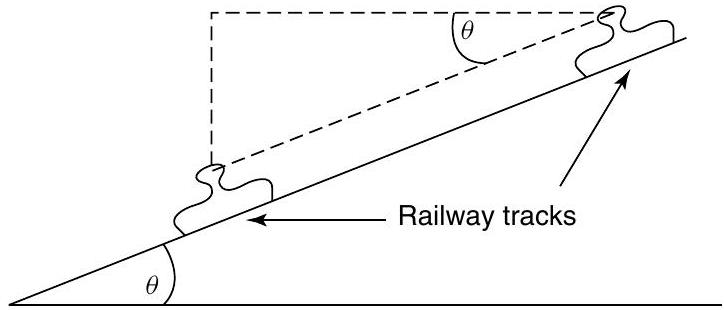
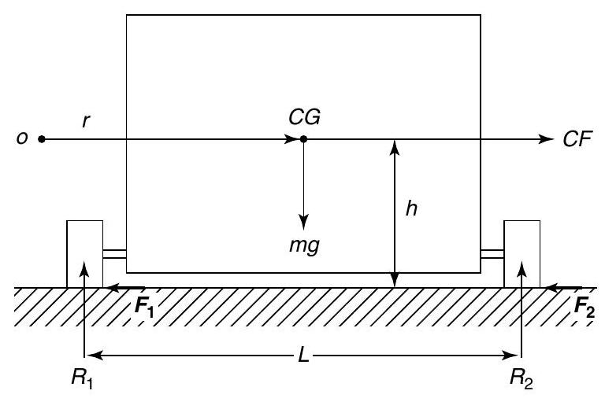
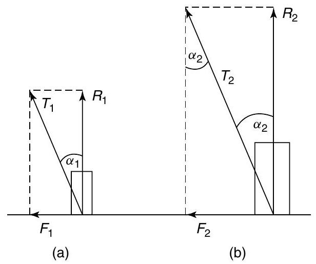
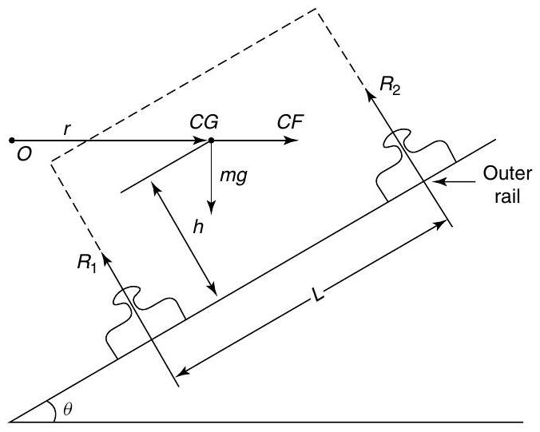
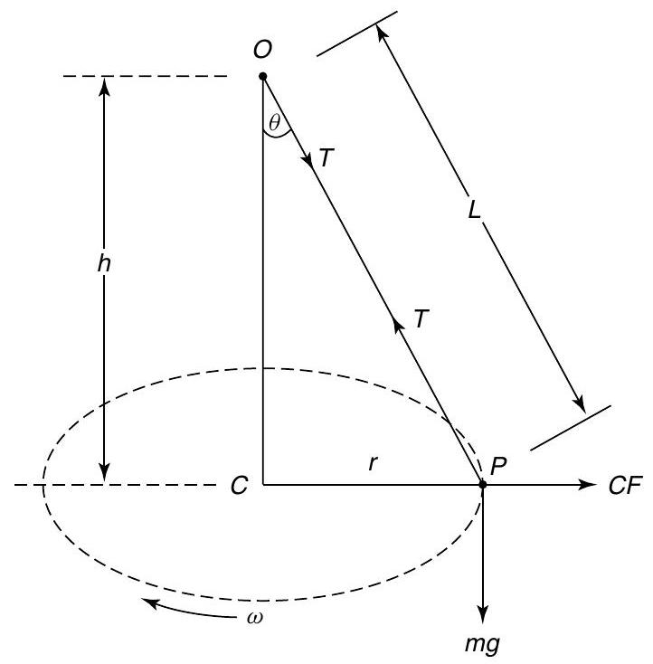
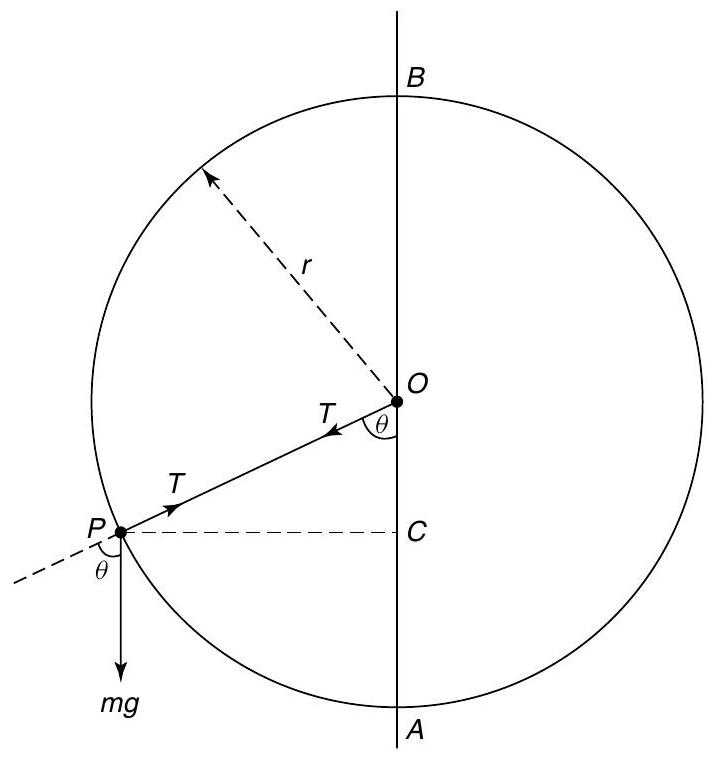
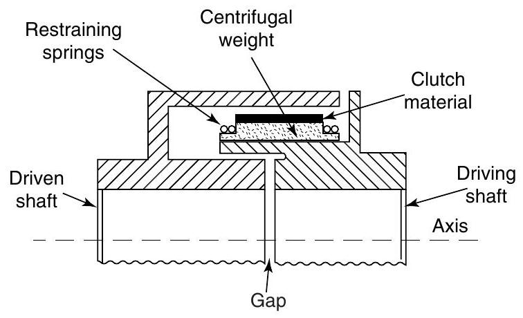

Mechanical science - Motion in a circle
Motion in a circle
At the end of this chapter you should be able to:
- understand centripetal force
- understand D'Alembert's principle
- understand centrifugal force
- solve problems involving locomotives and cars travelling around bends
- solve problems involving a conical pendulum
- solve problems involving the motion in a vertical circle
- understand the centrifugal clutch
16.1 Introduction
In this chapter we will restrict ourselves to the uniform circular motion of particles. We will assume that objects such as railway trains and motorcars behave as particles, i.e. rigid body motion is neglected. When a railway train goes round a bend, its wheels will have to produce a centripetal acceleration towards the centre of the turning circle. This in turn will cause the railway tracks to experience a centrifugal thrust, which will tend to cause the track to move outwards. To avoid this unwanted outward thrust on the outer rail, it will be necessary to incline the railway tracks in the manner shown in Figure 16.1. From Section 13.3, it can be seen that when a particle moves in a circular path at a constant speed $v$, its centripetal acceleration, $$ a=2v \sin \frac{\theta}{2} \times \frac{1}{t} $$
When $\theta$ is small, $\theta \approx \sin \theta$, hence $\quad a=2v \frac{\theta}{2} \times \frac{1}{t}=v \frac{\theta}{t}$ However, $\omega=$ uniform angular velocity $=\frac{\theta}{t}$ Therefore $a=v\omega$
Figure 16.1
If $r=$ the radius of the turning circle, then $$ v=\omega r $$ and $$ a=\omega^{2}r=\frac{v^{2}}{r} $$ Now $\quad$ force $=$ mass $\times$ acceleration Hence, $$ \text {centripetal force}=m\omega^{2}r=\frac{mv^{2}}{r} $$
D'Alembert's principle
Although problems involving the motion in a circle are dynamic ones, they can be reduced to static problems through D'Alembert's principle. In this principle, the centripetal force is replaced by an imaginary centrifugal force which acts equal and opposite to the centripetal force. By using this principle, the dynamic problem is reduced to a static one.
If a motorcar travels around a bend, its tyres will have to exert centripetal forces to achieve this. This is achieved by the transverse frictional forces acting on the tyres, as shown in Figure 16.2.
In Figure 16.2, the following notation is used: $CG=$ centre of gravity of the car, $CF=$ centrifugal force $=\frac{mv^{2}}{r}$, $m=$ mass of car, $g=$ acceleration due to gravity, $R_{1}=$ vertical reaction of 'inner' wheel, $R_{2}=$ vertical reaction of 'outer' wheel, $F_{1}=$ frictional force on 'inner' wheel, $F_{2}=$ frictional force on 'outer' wheel, $h=$ vertical distance of the centre of gravity of the car from the ground, $L=$ distance between the centre of the tyres, $r=$ radius of the turning circle, and $\mu=$ coefficient of friction.
Figure 16.2
Problem 1. Determine expressions for the frictional forces $F_{1}$ and $F_{2}$ of Figure 16.2. Hence determine the thrust on each tyre.
Resolving forces horizontally gives: $$ F_{1}+F_{2}=CF=\frac{mv^{2}}{r} $$ Resolving forces vertically gives: $$ R_{1}+R_{2}=mg $$ Taking moments about the 'outer' wheel gives: $$ CF \times h+R_{1} \times L=mg \frac{L}{2} $$ i.e. $\quad \frac{mv^{2}}{r}h+R_{1}L=mg \frac{L}{2}$ or $$ R_{1}L=mg \frac{L}{2}-\frac{mv^{2}}{r}h $$ Hence, $$ R_{1}L=m\left(\frac{gL}{2}-\frac{v^{2}h}{r}\right) $$ from which, $$ R_{1}=\frac{m}{L}\left(\frac{gL}{2}-\frac{v^{2}h}{r}\right) $$ Also, $\quad F_{1}=\mu R_{1}$ and $F_{2}=\mu R_{2}$ Substituting equation (16.4) into equation (16.3) gives: $$ \frac{m}{L}\left(\frac{gL}{2}-\frac{v^{2}h}{r}\right)+R_{2}=mg $$ Therefore, $$ \begin{aligned} R_{2} &=mg-\frac{m}{L}\left(\frac{gL}{2}-\frac{v^{2}h}{r}\right) \\ &=mg-\frac{mg}{2}+\frac{m}{L}\frac{v^{2}h}{r}\end{aligned} $$ i.e. $\quad R_{2}=\frac{m}{L}\left(\frac{gL}{2}+\frac{v^{2}h}{r}\right)$ From equations (16.4) to (16.6): $$ F_{1}=\mu\frac{m}{L}\left(\frac{gL}{2}-\frac{v^{2}h}{r}\right) $$ and $\quad F_{2}=\mu\frac{m}{L}\left(\frac{gL}{2}+\frac{v^{2}h}{r}\right) $$
To calculate the thrust on each tyre:
From Pythagoras' theorem, $$ T_{1}=\sqrt{F_{1}^{2}+R_{1}^{2}}=\sqrt{\mu^{2}R_{1}^{2}+R_{1}^{2}} $$ i.e. $\quad \boldsymbol{T}_{\mathbf{1}}=\boldsymbol{R}_{\mathbf{1}} \times \sqrt{\mathbf{1}+\boldsymbol{\mu}^{\mathbf{2}}}$ (see Figure 16.3(a)) Let $\alpha_{1}=$ angle of thrust, i.e. $$ \begin{aligned} \boldsymbol{\alpha}_{\mathbf{1}} &=\tan^{-1}\left(\frac{F_{1}}{R_{1}}\right) \\ &=\tan^{-\mathbf{1}}\boldsymbol{\mu}\end{aligned} $$
From Figure 16.3(b), $$ \begin{aligned} T_{2} &=R_{2} \times \sqrt{1+\mu^{2}} \\ \alpha_{2} &=\tan^{-1}\left(\frac{F_{2}}{R_{2}}\right) \\ &=\tan^{-1}\mu\end{aligned} $$
Figure 16.3
16.2 Motion on a curved banked track
Problem 2. A railway train is required to travel around a bend of radius $r$ at a uniform speed of $v$. Determine the amount that the 'outer' rail is to be elevated to avoid an outward centrifugal thrust in these rails, as shown in Figure 16.4.
Figure 16.4
To balance the centrifugal force:
from which,
Let $R=R_{1}+R_{2}$ Then $\quad \sin \theta=\frac{mv^{2}}{rR}$ Resolving forces vertically gives: $$ R \cos \theta=mg $$ from which, $$ R=\frac{mg}{\cos \theta} $$
Substituting equation (16.10) into equation (16.9) gives:
Hence $\tan \theta=\frac{v^{2}}{rg}\left(\operatorname{since} \frac{\sin \theta}{\cos \theta}=\tan \theta\right)$
Thus, the amount that the outer rail has to be elevated to avoid an outward centrifugal thrust on these rails,
Problem 3. A locomotive travels around a curve of 700 m radius. If the horizontal thrust on the outer rail is $1/40^{\text {th }}$ of the locomotive's weight, determine the speed of the locomotive (in km/h). The surface that the rails are on may be assumed to be horizontal and the horizontal force on the inner rail may be assumed to be zero. Take $g$ as $9.81\mathrm{~m}/ \mathrm{s}^{2}$.
Centrifugal force on outer rail $$ =\frac{mg}{40} $$ Hence, $$ \frac{mv^{2}}{r}=\frac{mg}{40} $$ from which, $$ \begin{aligned} v^{2} &=\frac{gr}{40}=\frac{9.81 \times 700}{40} \\ &=171.675\mathrm{~m}^{2}/ \mathrm{s}^{2}\end{aligned} $$ $$ \begin{aligned} v &=\sqrt{171.675}=13.10\mathrm{~m}/ \mathrm{s} \\ &=(13.10 \times 3.6)\mathrm{km}/ \mathrm{h}\end{aligned} $$ i.e. the speed of the locomotive, $\boldsymbol{v}=47.17\mathbf{~km}/ \mathbf{h}$
Problem 4. What angle of banking of the rails is required for Problem 3 above, for the outer rail to have a zero value of thrust? Assume the speed of the locomotive is $40\mathrm{~km}/ \mathrm{h}$.
From Problem 2, angle of banking, $$ \theta=\tan^{-1}\left(\frac{v^{2}}{rg}\right) $$ Speed $v=40\mathrm{~km}/ \mathrm{h}=\frac{40}{3.6}\mathrm{~m}/ \mathrm{s}=11.11\mathrm{~m}/ \mathrm{s}$. Hence, $\quad \theta=\tan^{-1}\left(\frac{11.11^{2}\mathrm{~m}^{2}/ \mathrm{s}^{2}}{700\mathrm{~m} \times 9.81\mathrm{~m}/ \mathrm{s}^{2}}\right)$ $=\tan^{-1}(0.01798)$ i.e. angle of banking, $\theta=1.03^{\circ}$
Now try the following exercise
Exercise 80 Further problems on motion in a circle
Where needed, take $g=9.81\mathrm{~m}/ \mathrm{s}^{2}$
- A locomotive travels around a curve of 500 m radius. If the horizontal thrust on the outer rail is $\frac{1}{50}$ of the locomotive weight, determine the speed of the locomotive. The surface that the rails are on may be assumed to be horizontal and the horizontal force on the inner rail may be assumed to be zero. [ $35.64\mathrm{~km}/ \mathrm{h}$ ]
- If the horizontal thrust on the outer rail of Problem 1 is $\frac{1}{100}$ of the locomotive's weight, determine its speed. [ $25.2\mathrm{~km}/ \mathrm{h}$ ]
- What angle of banking of the rails of Problem 1 is required for the outer rail to have a zero value of outward thrust? Assume the speed of the locomotive is $15\mathrm{~km}/ \mathrm{h}$. [0.203 ${ }^{\circ}$ ]
- What angle of banking of the rails is required for Problem 3, if the speed of the locomotive is $30\mathrm{~km}/ \mathrm{h}$ ? [0.811 ${ }^{\circ}$ ]
16.3 Conical pendulum
If a mass $m$ were rotated at a constant angular velocity $\omega$, in a horizontal circle of radius $r$, by a mass-less taut string of length $L$, its motion will be in the form of a cone, as shown in Figure 16.5.
Figure 16.5 Conical pendulum
Let $r=$ radius of horizontal turning circle, $L=$ length of string, $h=OC$, $\omega=$ constant angular velocity about $C$, $m=$ mass of particle $P$, $T=$ tension in string, and $\theta=$ cone angle
Problem 5. Determine an expression for the cone angle $\theta$ and the tension in the string $T$, for the conical pendulum of Figure 16.5. Determine also an expression for $\omega$.
Resolving forces horizontally gives: i.e. $$ \begin{aligned} CF &=T \sin \theta \\ m\omega^{2}r &=T \sin \theta\end{aligned} $$ from which, $\quad T=\frac{m\omega^{2}r}{\sin \theta}$ Resolving forces vertically gives: $$ mg=T \cos \theta $$ from which, $\quad T=\frac{mg}{\cos \theta}$
Equating equations (16.12) and (16.13) gives: $$ \frac{m\omega^{2}r}{\sin \theta}=\frac{mg}{\cos \theta} $$ Rearranging gives: $\frac{m\omega^{2}r}{mg}=\frac{\sin \theta}{\cos \theta}$ i.e. $$ \tan \theta=\frac{\omega^{2}r}{g} $$ Hence, the cone angle, $$ \theta=\tan^{-1}\left(\frac{\omega^{2}r}{g}\right) $$ From Figure 16.5, $$ \sin \theta=\frac{r}{L} $$ Hence, from equation (16.12), $$ T=\frac{m\omega^{2}r}{\frac{r}{L}} $$ i.e. the tension in the string, $$ T=m\omega^{2}L $$
From equation (16.14), $\quad \frac{\omega^{2}r}{g}=\tan \theta$ But, from Figure 16.5, $\quad \tan \theta=\frac{r}{h}$ Hence, $$ \frac{\omega^{2}r}{g}=\frac{r}{h} $$ and $$ \omega^{2}=\frac{g}{h} $$ Thus, angular velocity about $C$, $$ \omega=\sqrt{\frac{g}{h}} $$
Problem 6. A conical pendulum rotates about a horizontal circle at 90 rpm . If the speed of rotation of the mass increases by $10\%$, how much does the mass of the pendulum rise (in mm )? Take $g$ as $9.81\mathrm{~m}/ \mathrm{s}^{2}$.
Angular velocity, $$ \omega=\frac{2\pi n}{60}=\frac{2\pi \times 90}{60}=9.425\mathrm{rad}/ \mathrm{s} $$ From equation (16.17), $$ \omega=\sqrt{\frac{g}{h}} \quad \text {or}\quad \omega^{2}=\frac{g}{h} $$ from which, height, $$ \begin{aligned} \boldsymbol{h} &=\frac{g}{\omega^{2}}=\frac{9.81}{9.425^{2}} \\ &=\mathbf{0}. \mathbf{11044}\mathbf{~ m}(\text {see Figure} 16.5)\end{aligned} $$ When the speed of rotation rises by $10\%$, $n_{2}=90 \times 1.1=99\mathrm{~rpm}$. Hence, $$ \omega_{2}=\frac{2\pi n_{2}}{60}=\frac{2\pi \times 99}{60}=10.367\mathrm{rad}/ \mathrm{s} $$ From equation (16.17), $$ \omega_{2}=\sqrt{\frac{g}{h_{2}}} \quad \text {or}\quad \omega_{2}^{2}=\frac{g}{h_{2}} $$ Hence, $$ h_{2}=\frac{g}{\omega_{2}^{2}}=\frac{9.81}{10.367^{2}} $$ i.e. the new value of height, $\boldsymbol{h}_{\mathbf{2}}=\mathbf{0.09127}\mathrm{~m}$. Rise in height of the pendulum mass $$ \begin{aligned} &=\text {'old'}h-\text {'new'}h \\ &=h-h_{2}=0.11044-0.09127 \\ &=0.01917\mathrm{~m}=\mathbf{19.17}\mathbf{~ mm}\end{aligned} $$
Problem 7. A conical pendulum rotates at a horizontal angular velocity of $5\mathrm{~rad}/ \mathrm{s}$. If the length of the string is 2 m and the pendulum mass is 0.3 kg , determine the tension in the string. Determine also the radius of the turning circle. Take $g$ as $9.81\mathrm{~m}/ \mathrm{s}^{2}$.
Angular velocity, $\omega=5\mathrm{~rad}/ \mathrm{s}$ From equation (16.16), tension in the string, $$ \begin{aligned} T &=m\omega^{2}L \\ &=0.3\mathrm{~kg} \times (5\mathrm{~rad}/ \mathrm{s})^{2} \times 2\mathrm{~m} \\ \text {i.e.} \quad T &=15\mathrm{~kg} \mathrm{~m}/ \mathrm{s}^{2}\end{aligned} $$ However, $1\mathrm{~kg} \mathrm{~m}/ \mathrm{s}^{2}=1\mathrm{~N}$, hence, tension in the string, $T=15\mathrm{~N}$ From equation (16.13), $$ T=\frac{mg}{\cos \theta} $$ from which, $$ \cos \theta=\frac{mg}{T}=\frac{0.3\mathrm{~kg} \times 9.81\mathrm{~m}/ \mathrm{s}^{2}}{15\mathrm{~N}}=0.1962 $$ Hence, the cone angle, $\boldsymbol{\theta}=\cos^{-1}(0.1962)$ $$ =78.685^{\circ} $$ From equation (16.15), $$ \sin \theta=\frac{r}{L} $$ from which, radius of turning circle, $$ \boldsymbol{r}=L \sin \theta=2\mathrm{~m} \times \sin 78.685^{\circ}=\mathbf{1.961}\mathbf{~ m} $$
Now try the following exercise
Exercise 81 Further problems on the conical pendulum
- A conical pendulum rotates about a horizontal circle at 100 rpm . If the speed of rotation of the mass increases by 5%, how much does the mass of the pendulum rise? [ 8.36 mm ]
- If the speed of rotation of the mass of Problem 1 decreases by 5%, how much does the mass fall? [ 9.66 mm ]
- A conical pendulum rotates at a horizontal angular velocity of $2\mathrm{~rad}/ \mathrm{s}$. If the length of the string is 3 m and the pendulum mass is 0.25 kg , determine the tension in the string. Determine also the radius of the turning circle. [ 3 N, 1.728 m ]
16.4 Motion in a vertical circle
This Problem is best solved by energy considerations. Consider a particle $P$ rotating in a vertical circle of radius $r$ about a point $O$, as shown in Figure 16.6. Neglect losses due to friction.
Let $T=$ tension in a mass-less string, $r=$ radius of turning circle, $m=$ mass of particle.
Figure 16.6 Motion in a vertical circle
Problem 8. Determine the minimum tangential velocity at $A$, namely, $v_{A}$, which will just keep the string taut at the point $B$ for the particle moving in the vertical circle of Figure 16.6.
At the point $B$ the $$ \text {potential energy}=mg \times 2r $$ and the kinetic energy $=\frac{mv_{B}^{2}}{2}$ At the point $A$, the kinetic energy $$ KE=\frac{mv_{A}^{2}}{2} $$ and the potential energy $$ PE=0 $$ As there are no energy losses, KE at $A=(KE+PE)$ at $B$ Hence, from equations (16.18) to (16.20): $$ \frac{mv_{A}^{2}}{2}=mg \times 2r+\frac{mv_{B}^{2}}{2} $$ or $$ \frac{v_{A}^{2}}{2}=\frac{v_{B}^{2}}{2}+2gr $$ from which, $\quad v_{A}^{2}=v_{B}^{2}+4gr$ At $B$, $T=0$ Thus, weight $=$ centrifugal force at $B$, or $$ mg=\frac{mv_{B}^{2}}{r} $$ from which, $v_{B}^{2}=gr$ Substituting equation (16.22) into equation (16.21) gives: $$ v_{A}^{2}=gr+4gr=5gr $$ Hence, the minimum tangential velocity at $\boldsymbol{A}$, $$ v_{A}=\sqrt{5gr} $$
Problem 9. A mass of 0.1 kg is being rotated in a vertical circle of radius 0.6 m . If the mass is attached to a mass-less string and the motion is such that the string is just taut when the mass is at the top of the circle, what is the tension in the string when it is horizontal? Neglect losses and take $g$ as $9.81\mathrm{~m}/ \mathrm{s}^{2}$.
At the top of the circle, potential energy $=PE=2mgr$ and $KE=\frac{mv_{\mathrm{T}}^{2}}{2}$, where $v_{\mathrm{T}}=$ velocity of mass at the top. When the string is horizontal, $PE=mgr$ and kinetic energy, $$ KE=\frac{mv_{1}^{2}}{2}, $$ where $v_{1}=$ velocity of mass at this point. From the conservation of energy, $(PE+KE)$ at the top $=(PE+KE)$ when the string is horizontal i.e. $\quad 2mgr=mgr+\frac{mv_{1}^{2}}{2}-\frac{mv_{\mathrm{T}}^{2}}{2}$ but CF at top $=\frac{mv_{\mathrm{T}}^{2}}{r}=mg$ or $v_{\mathrm{T}}^{2}=gr$ or $$ \frac{v_{1}^{2}}{2}=2gr-gr+\frac{gr}{2}=\frac{3gr}{2} $$ i.e. $$ v_{1}^{2}=3gr $$ and $$ \begin{aligned} v_{1} &=\sqrt{3gr}=\sqrt{3 \times 9.81 \times 0.6} \\ &=4.202\mathrm{~m}/ \mathrm{s}\end{aligned} $$ Resolving forces horizontally, $$ \text {Centrifugal force}=T=\text {tension in the string} $$ Therefore, $$ T=\frac{mv_{1}^{2}}{r}=\frac{0.1\mathrm{~kg} \times (4.202)^{2}\mathrm{~m}^{2}/ \mathrm{s}^{2}}{0.6\mathrm{~m}} $$ i.e. the tension in the string, $T=2.943\mathrm{~N}$
Problem 10. What is the tension in the string for Problem 9 when the mass is at the bottom of the circle?
From equation (16.23), the velocity at the bottom of the circle $=v=\sqrt{5gr}$ i.e. $v=\sqrt{5 \times 9.81 \times 0.6}=5.4249\mathrm{~m}/ \mathrm{s}$. Resolving forces vertically, $T=$ tension in the string $=$ centrifugal force $+$ the weight of the mass $$ \begin{aligned} \text {i.e.} \quad T &=\frac{mv^{2}}{r}+mg=m\left(\frac{v^{2}}{r}+g\right) \\ &=0.1 \times \left(\frac{5.4249^{2}}{0.6}+9.81\right) \\ &=0.1 \times (49.05+9.81)=0.1 \times 58.86\mathrm{~N}\end{aligned} $$ i.e. tension in the string, $T=5.886\mathrm{~N}$
Problem 11. If the mass of Problem 9 were to rise, so that the string is at $45^{\circ}$ to the vertical axis and below the halfway mark, what would be the tension in the string?
At $45^{\circ}$, $\quad PE=\frac{mgr}{2}$ and $KE=\frac{mv_{2}^{2}}{2}$ where $v_{2}=$ velocity of the mass at this stage. From the conservation of energy, $PE+KE$ (at top) $=(PE+KE)$ at this stage Therefore, $$ 2mgr=\frac{mgr}{2}+\frac{mv_{2}^{2}}{2}-\frac{mv_{\mathrm{T}}^{2}}{2} $$ From problem 9, $\quad v_{T}^{2}=gr$ hence $$ \frac{v_{2}^{2}}{2}=\left(2r-\frac{r}{2}+\frac{r}{2}\right)g=2gr $$ from which, $$ v_{2}^{2}=2gr $$ and $$ \begin{aligned} v_{2}=\sqrt{4gr} &=\sqrt{4 \times 9.81 \times 0.6} \\ &=4.852\mathrm{~m}/ \mathrm{s}\end{aligned} $$ Resolving forces in a direction along the string, $T=$ tension in the string $=$ centrifugal force $+$ component of weight at $45^{\circ}$ to the vertical $$ \begin{aligned} \text {i.e.} \quad T &=\frac{mv_{2}^{2}}{r}+mg \cos 45^{\circ} \\ &=\frac{0.1 \times (4.852)^{2}}{0.6}+0.1 \times 9.81 \times 0.7071 \\ &=3.924\mathrm{~N}+0.6937\mathrm{~N}\end{aligned} $$ i.e. the tension in the string, $T=4.618\mathrm{~N}$
Now try the following exercise
Exercise 82 Further problems on motion in a vertical circle
- A uniform disc of diameter 0.1 m rotates about a vertical plane at 200 rpm . The disc has a mass of 1.5 kg attached at a point on its rim and another mass of 2.5 kg at another point on its rim, where the angle between the two masses is $90^{\circ}$. Determine the magnitude of the resultant centrifugal force that acts on the axis of the disc, and its position with respect to the 1.5 kg mass. [63.94 N at $59^{\circ}$ anticlockwise]
- If a mass of 4 kg is placed on some position on the disc in Problem 1, determine the position where this mass must be placed to nullify the unbalanced centrifugal force. [At a radius of 36.46 mm , $121^{\circ}$ clockwise to 1.5 kg mass]
- A stone of mass 0.1 kg is whirled in a vertical circle of 1 m radius by a mass-less string, so that the string just remains taut. Determine the velocity and tension in the string at (a) the top of the circle,(b) the bottom of the circle, (c) midway between (a) and (b). [(a) $3.132\mathrm{~m}/ \mathrm{s}$, 0 N (b) $7\mathrm{~m}/ \mathrm{s}$, 5.88 N (c) $5.42\mathrm{~m}/ \mathrm{s}$, 2.94 N ]
16.5 Centrifugal clutch
A clutch is an engineering device used for transferring motion from an engine to a gearbox or other machinery. The main purpose of the clutch is to transfer the motion in a smooth and orderly manner, so that the gears and wheels (in the case of the motor car) will accelerate smoothly and not in a jerky manner.
Figure 16.7
The centrifugal clutch works on the principle that the rotating driving shaft will cause the centrifugal weights, shown in Figure 16.7, to move radially outwards with increasing speed of rotation of the driving shaft. These centrifugal weights will be restrained by the restraining springs shown, but when the speed of the driving shaft reaches the required value, the clutch material will engage with the driven shaft, through friction, and cause the driven shaft to rotate. The driven shaft will thus reach a high speed of rotation quite smoothly in the required time.
Centrifugal clutches are popular when it is required to exert a high starting torque quickly and smoothly.
A suitable clutch material is asbestos, but it is likely that asbestos will be replaced by more modern materials for health and safety reasons.
Now try the following exercise
Exercise 83 Short answer problems on motion in a circle
- The centrifugal force of a mass $m$ moving at velocity $v$ at a radius $r$ is given by: $\frac{mv^2}{r}$
- What is the potential energy at the top of a circle for the motion in a vertical circle? 2mgr
- What is the potential energy at the bottom of a circle for the motion in a vertical circle? 0 (if datum is at the bottom)
- What is the potential energy at the 'middle' of a circle for the motion in a vertical circle? mgr
Exercise 84 Multi-choice problems on motion in a circle (Answers on page 285)
- To decrease the horizontal thrust on the outer rail of a train going round a bend, the outer rail should be: (a) lowered (b) raised (c) kept at the same level as the inner rail (d) made bigger
- If the speed of rotation of a conical pendulum is increased, the height of the pendulum mass will: (a) fall (b) become zero (c) stay the same (d) rise
- The minimum tension on the top of a vertical circle, for satisfactory motion in a circle is: (a) zero (b) $mg$ (c) $\frac{mv^{2}}{r}$ (d) negative
- If $v$ is the velocity at the 'middle' for the motion in a circle, the tension is: (a) zero (b) $\frac{mv^{2}}{r}$ (c) $mg$ (d) negative
- If the tension in the string is zero at the top of a circle for the motion in a vertical circle, the velocity at the bottom of the circle is: (a) zero (b) $\sqrt{5gr}$ (c) $\sqrt{gr}$ (d) $\sqrt{3gr}$